Visual Studio 2017 で Windows サービスを作った
公開日：
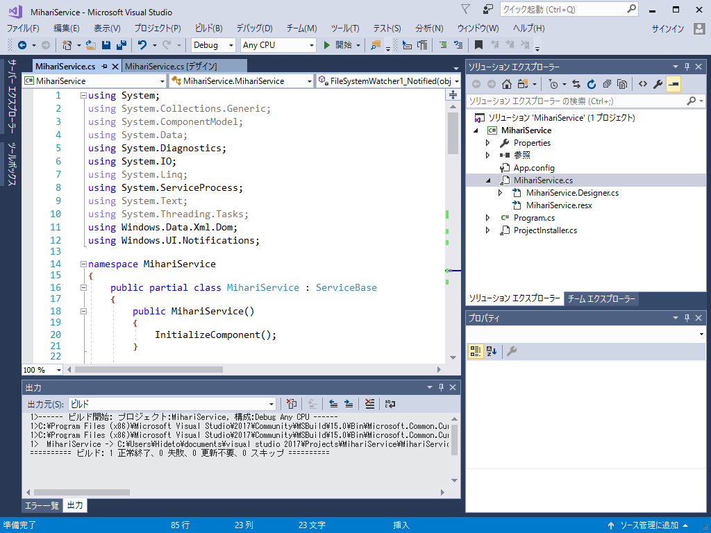
まぁ、この程度のことであれば、今までとあんまり変わらんと思うけどね。ちょこちょこ便利になってる感じはある。
今回の目標
実行ファイルが書き換わったら、トーストで通知してほしい。
プロジェクトを作成する
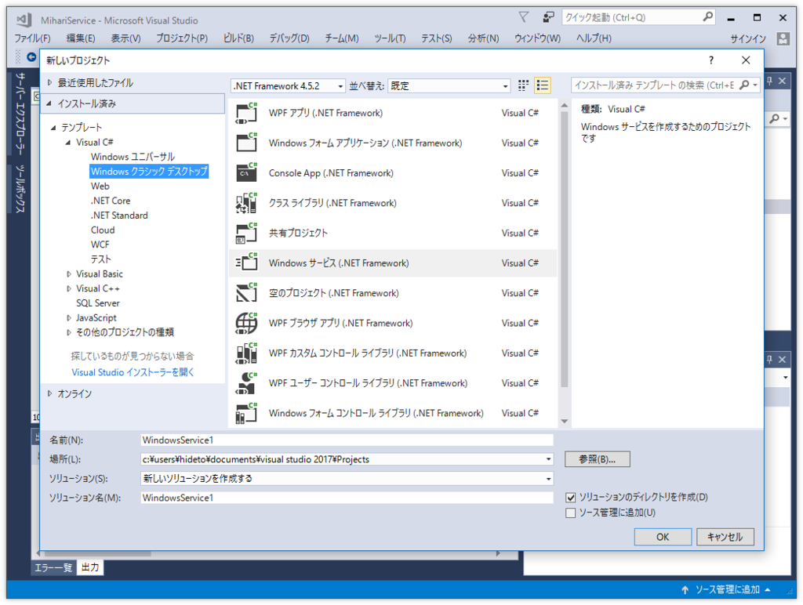
［テンプレート］－［Visual C#］－［Windows クラシック デスクトップ］を開いて、“Windows サービス（.NET Framework）”を選択。すると、Windows サービス プロジェクトのスケルトンがブリブリっと吐かれる。
Service1.cs では味気ないので、今回は MihariService.cs という名前にした。“見張り”やね（以前にもそういう名前のアプリを作って放置してたっけ）。
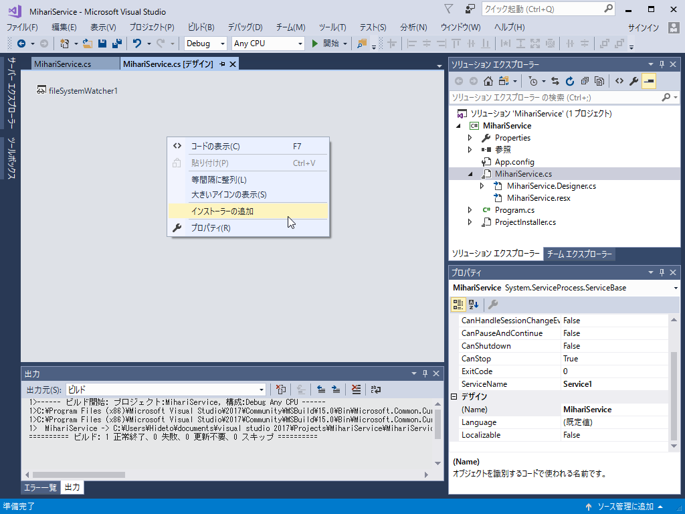
次に MihariService.cs のデザイナー画面を開き、コンテキストメニューの［インストーラーの追加］コマンドを実行。
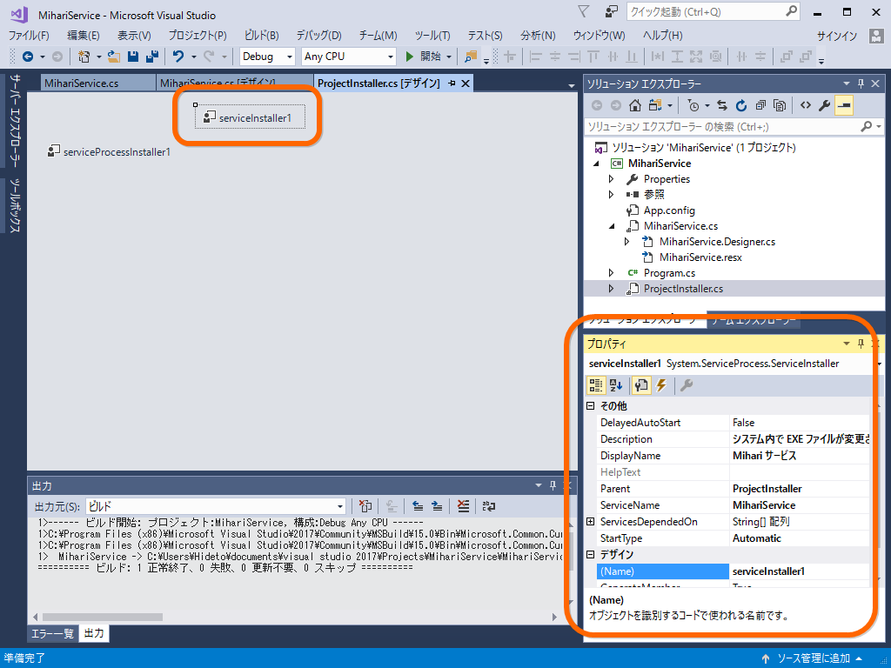
すると ServiceInstaller.cs というのが作成されます。このデザイン画面で ServiceInstaller1 を探し、プロパティ画面からいい感じにプロパティを設定。今回はこんな感じにした。
- ServiceName：MihariService（アプリ ID のノリでどこでも使っていくやで）
- DisplayName：Mihari サービス（WIndowsの「サービス」からはこれが見えるらしい。日本語にした）
- Description：システム内で EXE ファイルが変更されるのを監視します
- StartType：Automatic（これでたぶん自動実行されるはず）
最低限の準備はこれでいいみたい。まだ中身はないけれど、ソリューションをビルドする。
サービスの登録とデバッグ
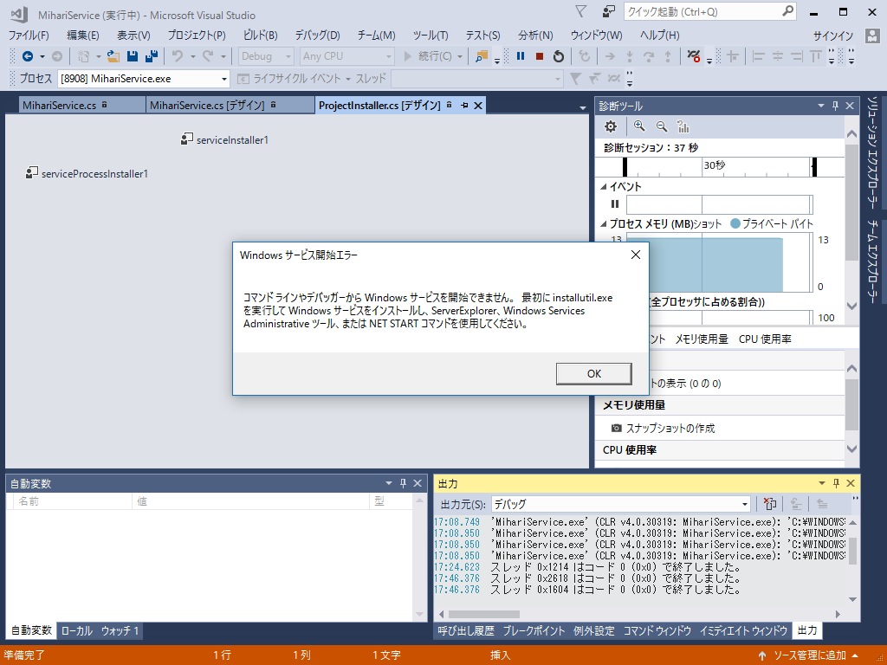
このままデバッグ実行をしても、エラーが出る。ビルドした Windows サービスをシステムに登録しなきゃいけない。
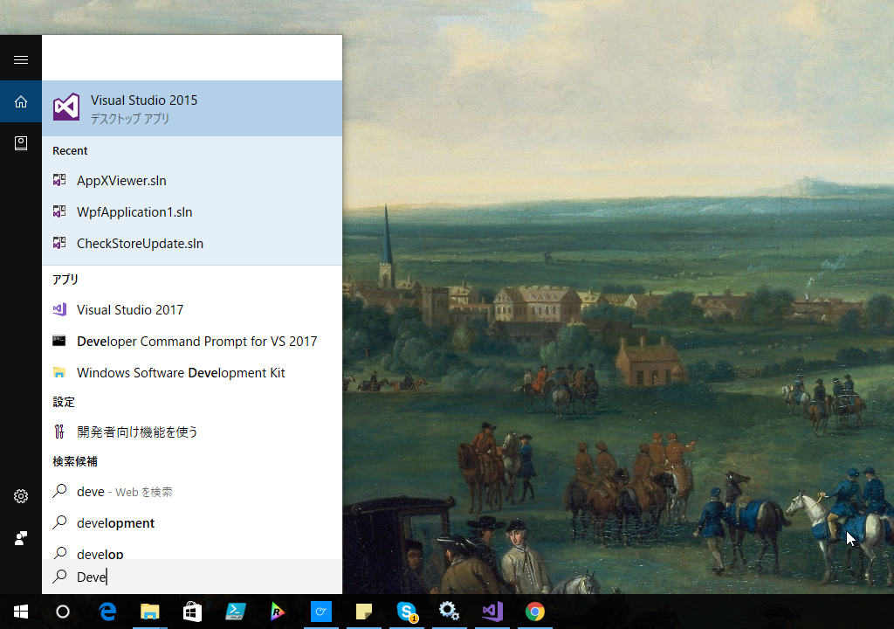
まず、ツールの類にパスの通ったコマンドプロンプトを起動（よくわかんないけど Developer Command Prompt for VS 2017 というのでいいみたい）。
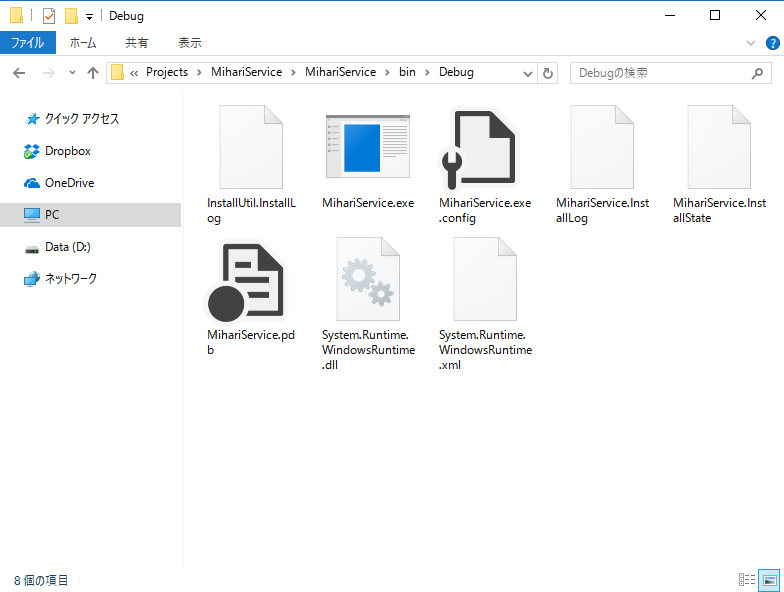
Debug フォルダーに移動してパスをコピーしておき、コマンドプロンプトで移動。installutil で MihariService.exe をシステムに登録する。
********************************************************************** ** Visual Studio 2017 Developer Command Prompt v15.0.26228.4 ** Copyright (c) 2017 Microsoft Corporation ********************************************************************** > cd （Debug フォルダー）> installutil MihariService.exe
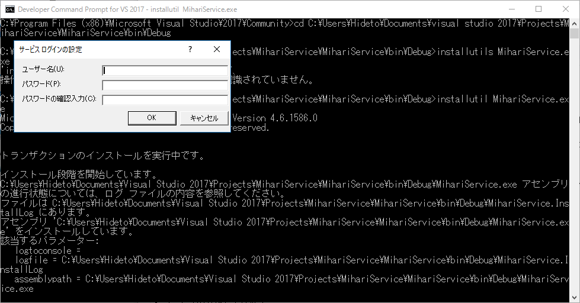
ログインを求められたら、ユーザー名とパスワードを入力。ユーザー名はコンピュータ名から始まる完全な奴じゃないとダメみたい。
> whoami
で取得したのをコピーして使うといい。
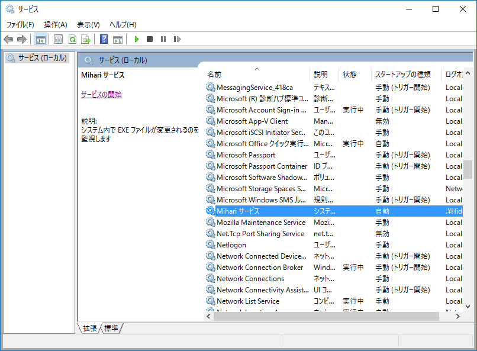
あとは「サービス」に移動して、登録したサービスを開始する。
デバッグ
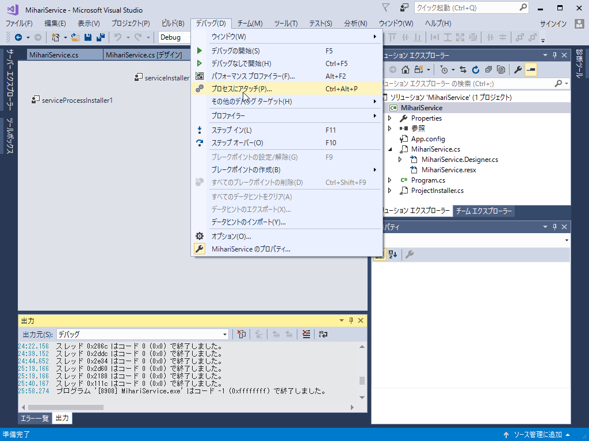
デバッグを行うには Windows サービスのプロセスにアタッチすればよい。
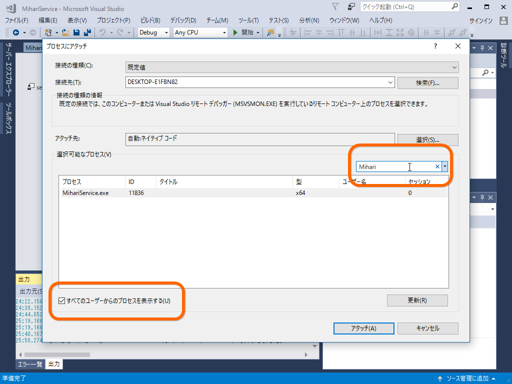
［すべてのユーザーからのプロセスを表示する］オプションを有効化し、フィルターで Mihari を探すと早い。あとはブレークポイントを仕掛けるなりなんなりご自由に。
リビルドのときは サービスを止める → ビルド → サービスを開始する（→再びアタッチする）みたいな作業フローで。ちょっと面倒くさいけど仕方ない（もしかしたら自動化できるのかもだけど、そこまではいいや）。
ファイルを監視する
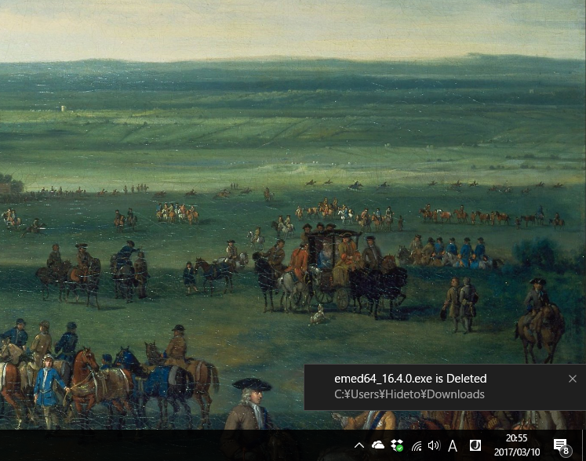
めんどくさくなった。MihariService.cs に FileSystemWatcher を追加して、いろいろコードを書けばおっけ。
完成してから気づいたんだけど、サービスから通知トーストを出しても、クリックに反応してくれないんだな（フォルダーを開いたりしてほしい）。単にログだけ出力し、そのログを監視してトーストを出すクライアントを別途作った方がよかった。
先人たちのおかげですんなり完成しました。